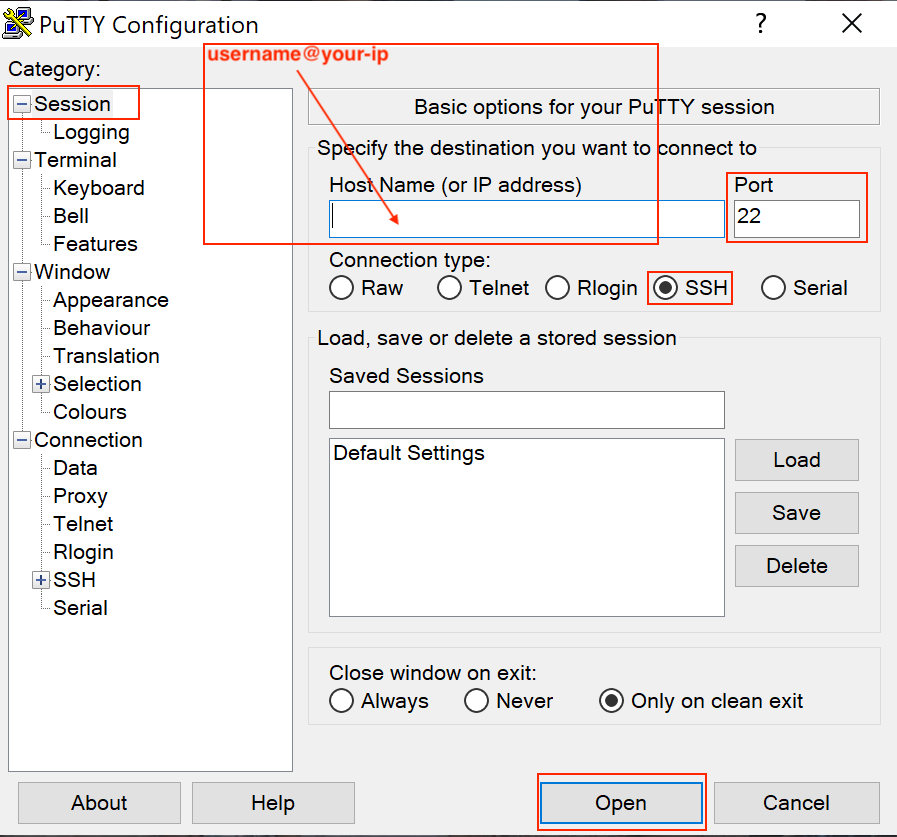
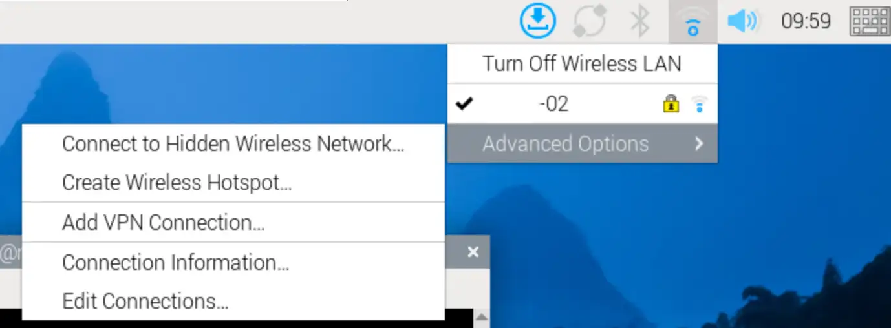

Raspberry Pi OS¶
Chipsee CM5 Industrial PC
User Manual for Raspberry Pi OS
This is the software manual for Chipsee Raspberry Pi CM5 industrial PC. If you’ve never developed on this hardware with a Raspberry Pi OS, this manual can get you started quickly.
Supported Chipsee PCs: all Chipsee Raspberry Pi CM5 based industrial PCs, including but not limited to:
PPC-CM5-050 (CS12720RA5050P)
EPC-CM5-070 (CS10600RA5070E)
PPC-CM5-070 (CS10600RA5070P)
PPC-CM5-070-D (CS10600RA5070P-D)
PPC-CM5-101 (CS12800RA5101P)
PPC-CM5-133 (CS19108RA5133)
PPC-CM5-150 (CS10768RA5150)
PPC-CM5-156 (CS19108RA5156)
PPC-CM5-170 (CS12102RA5170)
PPC-CM5-190 (CS12102RA5190)
PPC-CM5-215 (CS19108RA5215)
PPC-CM5-236 (CS19108RA5236)
CS-CM5-BOX (CSRA5BOX)
Not supported:
AIO-CM5-101 (CS12800RA5101A)
AIO-CM5-156 (CS19108RA5156A)
Prepare for Developing¶
To power on the Chipsee industrial PC, you need a power adapter; then you may want to connect to this PC from your laptop or computer. Let’s prepare some hardware and software.
Prepare the Hardware¶
Power Adapter:
For products with a screen of 5” or 7” and BOX product, a power adapter between 9V ~ 30V DC output is required.
For products with a screen of 10.1” or larger, you need a DC adapter with output between 15V ~ 30V.
For example, you can use a switching power DC adapter; or use a laptop adapter with proper voltage such as 18.5V, 19V etc when developing; or use a 12V power adapter from a used router for small screen products when developing.
To connect to the Chipsee industrial PC from your workstation, you can use:
A USB to serial cable (if you need serial debug, i.e. connect to RS232 serial debug port).
An Ethernet cable (if you want to SSH into the Chipsee industrial PC). You may also use WiFi if your Chipsee industrial PC supports WiFi, in this case you don’t need the Ethernet cable.
A USB type-C cable (if you want to flash a new OS).
If you use the CM5 Lite module which doesn’t have built-in eMMC storage, you also need one TF(Micro SD) card, 16GB at least, to boot your system.
Prepare the Software¶
Thanks to the Raspberry Pi OS, developing on a Chipsee industrial PC isn’t really different from developing on a normal Raspberry Pi (except for optical isolated GPIO, RS232/485 serial ports and other hardware resources which a Pi doesn’t have), you can use any developer software you’re comfortable with.
The software listed below are not mandatory, they’re recommendations because we find them easy to use:
To SSH into a Chipsee industrial PC, you may find PuTTY or XShell on Windows handy; for Linux and macOS users, a terminal app should come with your OS out of box, like Terminal/iTerm2 on macOS and xterm on Linux.
To use a remote desktop, you can download VNC Viewer on your laptop or PC.
7zip for firmware image decompression, you could use your workstation’s stock unzip program as well.
You can use BalenaEtcher or the official Raspberry Pi Imager to flash OS to the machine.
Rpiboot for Windows, or Rpiboot for other platforms to let your host machine detect the Chipsee industrial Pi eMMC as a USB device.
Note
In this documentation, all the commands are executed with
rootuser privileges.
Connect to the Device¶
There are 3 ways to connect to the device from your workstation:
From Serial RS232 port
From Ethernet or Wi-Fi (SSH)
From Ethernet or Wi-Fi (Remote Desktop/VNC)
Let’s take a look at these connecting methods one by one.
Connect From Serial Port¶
[ Cheatsheet for experienced developers: username is pi, password is raspberry, pin is RS232_0 ]
Enable/Disable Serial Debug Port¶
By default serial debug is enabled, you don’t have to do anything to use the RS232_0 as a serial debug port. If you need to disable the debug function for this port to use a normal serial function instead, you could edit the /boot/firmware/cmdline.txt file in the Raspberry Pi OS.
By default the file looks like this:
{kind=link}
To disable debug: remove console=ttyAMA0,115200, reboot.
To enable debug: add console=ttyAMA0,115200 back, reboot.
Warning
Please don’t use the raspi-config to toggle the serial debug function switch. Because the official Pi OS uses “serial0” TTL debug port instead of “ttyAMA0” (the one we use here), which will not work for the “RS232_0” serial debug port. If you happen to have disabled the serial debug in raspi-config, you can manually enable it with the method above.
Connect the Wire¶
In our pre-built Raspberry Pi OS, the RS232_0 serves as a serial debug port. We can connect a RS232 cable between the Chipsee industrial PC and our workstation, allowing us to control the Chipsee industrial PC from our workstation.
To get started, you need a USB to serial cable, we will use a USB Type-C to DB-9 cable as an example, you can use a USB-A cable as well, you need to plug the USB end to your workstation, and the serial end to the Chipsee device.
I will plug the USB Type-C port to a Mac (Windows and Linux work fine too), and then I would use three female to female dupont wires, to connect 3 of the DB-9 pins to GND and RS232_0 (RX and TX) pins of my Chipsee industrial PC.

Use a USB to Serial Cable to Connect the Chipsee Industrial PC with Your Workstation
Take a look at the image below, this is the 10.1” product, if your product has a different screen size, check out the hardware document to find out which pins are RS232_0 TX and RX.
Note
Each hardware doc has a “RS232/RS485/CAN” section, it lists which is the RS232_0 TX and RX in the image and the table of their respective docs. Find your model here (Industrial PCs Powered by Raspberry Pi) and scroll to the “RS232/RS485/CAN” section to check out.
You should connect the DB-9’s RX to the device’s TX, and DB-9’s TX to the device’s RX, you should also connect their GNDs (the white wire).

Connect 3 Pins with Dupont Wires (or with a phoenix connector)
Linux and MacOS¶
For MacOS and Linux users, you will need a program called screen. It should be already installed on most MacOS and Linux distributions(if the screen program is not installed on your computer, you can search how to install it, for example, “apt install screen” on Debian). Open your terminal and type screen -v. If the screen program is already installed in your computer, you should see a version number, like that in the image below:

Confirm You Have the Screen Program (MacOS & Linux)
Because the USB end of the cable is plugged into our workstation, we need to know which USB device it is in Linux/MacOS. We can find it out by testing:
ls /dev/tty*You might see many tty devices listed in your terminal, and cannot decide which is your USB to RS232 cable. Here is a tip: you can unplug the cable first, type the command to see what is listed in the OS. Then you plug it back in, and test again, to see what has recently appeared. The difference between the two should be your cable. In the image below, we found the /dev/tty.usbserial-10 is our USB to RS232 cable.
{kind=link}
Find Out Which Device is Your USB to Serial Cable
You can put the device name you found to the screen program as an argument. To connect to the device (115200 is the default baud rate of the device):
screen /dev/tty.usbserial-10 115200
When the prompt asks you to login, type the user name pi, its password is raspberry:
1raspberrypi login: pi 2pi@raspberrypi:~$ ls / 3bin dev home lost+found mnt proc run srv tmp var 4boot etc lib media opt root sbin sys usr 5pi@raspberrypi:~$
If there is a blank/white screen, you can hit Enter or type some commands to see if you can interact with the device. In the image below, the device responds to my ls command.
The Screen Program Connects Your Workstation to the Industrial PC’s Console
If you want to exit the screen program, you can press Ctrl+A then press K.
The program will ask you if you want to kill this window, then press y to exit the program.
Press “Ctrl + A” Follow by a “K” to Exit the Program
{kind=link}
{kind=link}
Windows¶
For Windows users, you don’t need to install a specific “driver” kind of thing for Windows to recognize a Chipsee PC, but before proceeding, you should see a COM port appear/disappear when plug/unplug your USB to serial cable in Windows.
Most USB to serial cables don’t require driver installation on Windows10/11. But if you find your cable isn’t recognizable by Windows, try checking the cable’s manufacturer’s website to learn more about it. Most of the time, simply doing a Windows update should do the trick, Windows can detect the cable’s USB driver and install it for you.
You could install a program called PuTTY (or XShell etc), here is a link to download the software: https://www.putty.org/. If you’re comfortable with other clients other than PuTTY, you can use those as well.
With PuTTY in your belt, let’s find out which COM port your USB to RS232 cable is using. One tip is to check the Microsoft Windows Device Manager (right click Windows icon, select Device Manager). Check which COM port appears/disappears when you plug/unplug the USB to serial cable. And that COM port device should be your USB to RS232 cable. Keep a note of the COM port your serial cable is using, let’s say it’s “your-com”, or “COM3” in this example.

COM3 is the USB to Serial Cable
Open the PuTTY program, select Session, choose Serial in the radio buttons, and fill the COM port(your-com, or COM3 in this example) you found in the Microsoft Windows Device Manager, and choose 115200 as baud rate, then click Open.

Input your-com in the Serial Line field, in our case COM3
Now you should be able to connect from your workstation to the device through the serial port. You can try to hit Enter, or type some commands, like ls, to see if the device replies to your commands. If the prompt asks you to login, type the user name pi, password is raspberry:
1raspberrypi login: pi 2pi@raspberrypi:~$ ls / 3bin dev home lost+found mnt proc run srv tmp var 4boot etc lib media opt root sbin sys usr 5pi@raspberrypi:~$
Connect From Network (SSH)¶
[Cheatsheet for experienced developers: username: pi, password: raspberry]
By default SSH and VNC are disabled for security reasons, you could enable them through:
raspi-config
A GUI of raspi-config

Go to TUI of raspi-config
{kind=link}
Move to Interfaces
{kind=link}
Hit Enter and Confirm to Enable SSH
You can SSH to the device when it’s connected to the network, either through Wi-Fi or Ethernet.
First make sure you’re connected through WiFi or Ethernet (to learn how, jump to the Network section below. Ethernet can be automatically detected, WiFi needs some configuration).
Then you can check the IP address with ifconfig:
{kind=link}
Check IP with ifconfig
1pi@raspberrypi:~ $ ifconfig
2eth0: flags=4099<UP,BROADCAST,MULTICAST> mtu 1500
3 ether 2c:cf:67:b8:84:5c txqueuelen 1000 (Ethernet)
4 RX packets 0 bytes 0 (0.0 B)
5 RX errors 0 dropped 0 overruns 0 frame 0
6 TX packets 0 bytes 0 (0.0 B)
7 TX errors 0 dropped 0 overruns 0 carrier 0 collisions 0
8 device interrupt 107
9
10eth1: flags=4163<UP,BROADCAST,RUNNING,MULTICAST> mtu 1500
11 inet 192.168.0.100 netmask 255.255.255.0 broadcast 192.168.0.255
12 inet6 fe80::6523:8977:2a7a:d657 prefixlen 64 scopeid 0x20<link>
13 inet6 240e:413:910:55:592d:e9eb:bf59:e0d4 prefixlen 64 scopeid 0x0<global>
14 ether 22:89:84:6a:96:ab txqueuelen 1000 (Ethernet)
15 RX packets 1108 bytes 1385789 (1.3 MiB)
16 RX errors 202 dropped 0 overruns 0 frame 197
17 TX packets 922 bytes 129320 (126.2 KiB)
18 TX errors 0 dropped 0 overruns 0 carrier 0 collisions 0
19
20lo: flags=73<UP,LOOPBACK,RUNNING> mtu 65536
21 inet 127.0.0.1 netmask 255.0.0.0
22 inet6 ::1 prefixlen 128 scopeid 0x10<host>
23 loop txqueuelen 1000 (Local Loopback)
24 RX packets 101 bytes 9544 (9.3 KiB)
25 RX errors 0 dropped 0 overruns 0 frame 0
26 TX packets 101 bytes 9544 (9.3 KiB)
27 TX errors 0 dropped 0 overruns 0 carrier 0 collisions 0
28
29wlan0: flags=4163<UP,BROADCAST,RUNNING,MULTICAST> mtu 1500
30 inet 192.168.50.159 netmask 255.255.255.0 broadcast 192.168.50.255
31 inet6 fe80::99ba:18c8:40a8:8fc3 prefixlen 64 scopeid 0x20<link>
32 ether 2c:cf:67:b8:84:5d txqueuelen 1000 (Ethernet)
33 RX packets 189 bytes 53162 (51.9 KiB)
34 RX errors 0 dropped 3 overruns 0 frame 0
35 TX packets 80 bytes 13850 (13.5 KiB)
36 TX errors 0 dropped 0 overruns 0 carrier 0 collisions 0
The inet line contains your-ip of eth0(wired) and wlan0(wireless). In the case above the IP address is 192.168.50.159 through wlan0.
If you’re using Ethernet, it should be one of eth0(line 2) and eth1(line 9), depending on your device model. For example, on the dual-lan 7 inch product, LAN0 port is eth0, LAN1 port is eth1.
Then we can ssh from our workstation with this IP address.
Linux / MacOS¶
For Linux and MacOS users, you can use your terminal and type:
ssh pi@your-ip
# In our case, your-ip is 192.168.50.159
ssh pi@192.168.50.159
The username is pi, and the password is raspberry.
{kind=link}
SSH with your-ip
Windows¶
For Windows users using PuTTY, you can choose Session, input username@your-ip (in our case pi@192.168.50.159, yours should be different) in the Host Name field. Port Number should remain 22, choose SSH as the connection type in the radio buttons, click “Open”. The password is raspberry.
{kind=link}
Input username@your-ip in the Host Name field, in our case pi@192.168.50.159
Now you have connected to the device through the network.
Connect with VNC Remote Desktop¶
[Cheatsheet for experienced developer: username: pi, password: raspberry, IP check: ifconfig, VNC port: 5900 (default port).]
We can have a graphical user interface if we use VNC to connect to our Chipsee industrial PC. This is handy if you’re developing an HMI and want to test from your own laptop or computer. Here is how:
By default VNC is disabled, you can enable VNC from sudo raspi-config or in the GUI.
In the previous SSH section there are images of how to enable them through TUI, but you can also use the GUI program:
{kind=link}
Go to GUI of raspi-config
{kind=link}
Enable VNC (or SSH if need so)
After enabling the VNC service, refer to the previous section to learn how to use ifconfig to find out your Chipsee industrial PC’s IP address. In our case we get 192.168.50.159.
Then, for either Windows, macOS or Linux users, please open the VNC Viewer software on your laptop or PC. In the input area, which has a placeholder “Enter a VNC server address or search”, you should input the IP address we obtained earlier: your-ip, in our case: 192.168.50.159 (yours should be different), and hit enter.

Change the input to your-ip, in our case 192.168.50.159
VNC Viewer might ask for your credentials, you should input our username and password, in our case: username: pi, password: raspberry. And then continue, VNC Viewer might tell you the connection is not encrypted, it’s OK if you’re in your local network.
Now we should see our Chipsee industrial PC’s desktop GUI in the VNC Viewer software.
Hardware Resources¶
When you develop software for the Chipsee industrial PC, you can open the hardware document beside this software document, to aid you in wiring your devices.
Network¶
Note
If your product has a CAT-1 (Simcom 7670G) 4G/LTE modem, but SIM card is not inserted, WiFi/Ethernet traffic to the Internet will not be routed through Ethernet/WiFi by default. You can disable routing through 4G and use Ethernet/WiFi instead with:
# If your product only has 1 Ethernet port, eth1 is 4G device
$ sudo ip route del default via 192.168.0.1 dev eth1
# If your product has 2 Ethernet ports, eth2 is 4G device
$ sudo ip route del default via 192.168.0.1 dev eth2
This is useful when you’re developing in house and don’t want to use the 4G traffic.
More background:
Operating system will route traffic from smaller metric device first. To check the routing info:
$ ip route
This will delete the route to eth1(4G/LTE) with metric 100, and then add a new one with metric of 700:
$ sudo ip route del default via 192.168.0.1 dev eth1
$ sudo ip route add default via 192.168.0.1 dev eth1 proto dhcp src 192.168.0.100 metric 700
General¶
To check the network interface information:
1$ ifconfig
2 eth0: flags=4163<UP,BROADCAST,RUNNING,MULTICAST> mtu 1500
3 inet 192.168.50.158 netmask 255.255.255.0 broadcast 192.168.50.255
4 inet6 fe80::16d:68d8:c0f5:1bd6 prefixlen 64 scopeid 0x20<link>
5 ether 2c:cf:67:b8:84:5c txqueuelen 1000 (Ethernet)
6
7 eth1: flags=4163<UP,BROADCAST,RUNNING,MULTICAST> mtu 1500
8 inet 192.168.0.100 netmask 255.255.255.0 broadcast 192.168.0.255
9 inet6 fe80::6523:8977:2a7a:d657 prefixlen 64 scopeid 0x20<link>
10 ether 22:89:84:6a:96:ab txqueuelen 1000 (Ethernet)
11
12 lo: flags=73<UP,LOOPBACK,RUNNING> mtu 65536
13 inet 127.0.0.1 netmask 255.0.0.0
14 inet6 ::1 prefixlen 128 scopeid 0x10<host>
15 loop txqueuelen 1000 (Local Loopback)
16
17 wlan0: flags=4163<UP,BROADCAST,RUNNING,MULTICAST> mtu 1500
18 inet 192.168.50.159 netmask 255.255.255.0 broadcast 192.168.50.255
19 inet6 fe80::99ba:18c8:40a8:8fc3 prefixlen 64 scopeid 0x20<link>
20 ether 2c:cf:67:b8:84:5d txqueuelen 1000 (Ethernet)
You can find your ipv4 address of each interface after the inet line.
Warning
When inserting a SIM card, power off the device first. SIM card does not support hot plug.
4G/LTE (CAT4 Module)¶
For the CAT4 module (Quectel EC25).
{kind=link}
Checking Modem with mmcli
If your product has a 4G modem, after inserting a SIM card, you can test the 4G/LTE with the Chipsee Hardware Test program first:
{kind=link}
In the Hardware Test program, click 4G Enable, then Refresh to check your connection information, you can also open the browser to test you’re connected to the Internet.
To programmatically enable 4G:
In QMI mode you can use quectel-CM to enable 4G/LTE to connect to Internet:
sudo quectel-CM &
To test you’re connected to the Internet:
ping 1.1.1.1
The program will set your DNS automatically.
{kind=link}
Run quectel-CM to Enable 4G and Connect to the Internet
The quectel-CM program doesn’t persist across reboot, you may consider creating a systemd service to auto start the quectel-CM program on boot, or run the sudo quectel-CM & command in your own application. There is a simple starting point:
# create a file /etc/systemd/system/quectel-cm.service
[Unit]
Description=Quectel Connection Manager
[Service]
Type=simple
ExecStartPre=/bin/sh -c 'until [ -e /dev/cdc-wdm0 ]; do sleep 1; done' # give the modem some time to initialize
ExecStart=/usr/bin/quectel-CM
SyslogIdentifier=quectel-cm
KillMode=control-group
Restart=always
RestartSec=30
TimeoutStartSec=30
StandardOutput=journal
StandardError=journal
[Install]
WantedBy=multi-user.target
Reload the systemd after creating or modifying quectel-cm.service:
sudo systemctl daemon-reload
Manually start/stop the service (enable/disable 4G):
sudo systemctl start quectel-cm.service
sudo systemctl stop quectel-cm.service
Check status and logs:
sudo systemctl status quectel-cm.service
Enable/disable autostart on boot:
sudo systemctl enable quectel-cm.service
sudo systemctl disable quectel-cm.service
Then you could have 4G enabled that persists across reboot, you can edit the /etc/systemd/system/quectel-cm.service file to meet your needs.
{kind=link}
Use Systemd to Auto Start quectel-cm Program on System Boot to Auto Connect 4G/LTE
You can also use normal AT commands to check network information:
First listen the response from /dev/ttyUSB2:
1$ cat /dev/ttyUSB2 &
To acquire IMEI:
1$ echo -e "AT+GSN\r" > /dev/ttyUSB2
2
3# Response:
4868414063045508
5
6OK
To check signal strength:
1$ echo -e "AT+CSQ\r" > /dev/ttyUSB2
2
3# Response:
4+CSQ: 18,99 # strength: 18; ber: 99(99 means not known or not detectable)
5
6OK
To switch to QMI device mode (default mode) if you switched to other mode accidentally:
1echo -e 'AT+QCFG="usbnet",0\r' > /dev/ttyUSB2
2echo -e 'AT+CFUN=1,1\r' > /dev/ttyUSB2
4G/LTE (CAT1 Module)¶
For the CAT1 module (Simcom 7670G).
If your product has a 4G modem, after inserting a SIM card, the 4G function should work out of box. The product uses RNDIS (Remote Network Driver Interface Specification) for 4G modem.
If you still have problems connecting with 4G, you can take a look at /opt/chipsee/test folder, unzip the /opt/chipsee/test/simcom-linux-4g with sudo tar -xzf simcom-linux-4g.tar.gz, there is a README file along with some scripts used to connect 4G.
{kind=link}
You can check the status of your modem with mmcli (ModemManager):
1$ mmcli -L
2 /org/freedesktop/ModemManager1/Modem/0 [SIMCOM INCORPORATED] SIM7670G-LNGV
3$ mmcli -m 0
4 -----------------------------
5 General | path: /org/freedesktop/ModemManager1/Modem/0
6 -----------------------------
7 Hardware | manufacturer: SIMCOM INCORPORATED
8 -----------------------------
9 System | device: /sys/devices/platform/axi/1000480000.usb/usb5/5-1
10 | ports: eth1 (net), ttyACM0 (at), ttyACM1 (ignored), ttyACM2 (at)
11 -----------------------------
12 Status | state: failed
13 | failed reason: sim-missing
14 | power state: on
15 -----------------------------
16 Modes | supported: allowed: any; preferred: none
17 -----------------------------
18 IP | supported: ipv4, ipv6, ipv4v6, non-ip
In the highlighted lines, you can see that the 4G/LTE device is eth1 on PPC-CM5-101 or larger screen models; in dual-lan PPC-CM5-070D the 4G will be eth2. The status shows the failed reason is “sim-missing” when a SIM card is not inserted.
When a sim card is inserted, 4G should work automatically.
{kind=link}
When 4G is connected, check Public IP with curl
Ethernet and WiFi¶
When you plug your Ethernet cable to the device, Ethernet should be connected automatically.
For connecting to WiFi, it’s the same as normal Raspberry Pi’s, you can refer to the Raspberry Pi’s official documentation to learn how to use WiFi and Ethernet in the networking section: https://www.raspberrypi.com/documentation/computers/configuration.html#networking.
{kind=link}
Method 1: Connecting WiFi from Desktop GUI
{kind=link}
Method 2: Connecting WiFi from raspi-config TUI’s System Options -> S1 Wireless LAN
From the terminal, you can use nmcli to configure the network, nmcli is the new default of Raspberry Pi OS. If the examples in the official Pi’s documentation is not enough, you can also refer to the documents of the nmcli program.
pi@raspberrypi:~ $ nmcli radio wifi
enabled
pi@raspberrypi:~ $ sudo nmcli radio wifi on
pi@raspberrypi:~ $ nmcli dev wifi list
IN-USE BSSID SSID MODE CHAN RATE SIGNAL BARS SECURITY
* 04:42:1A:65:B3:10 chipsee Infra 8 270 Mbit/s 50 ▂▄__ WPA2
pi@raspberrypi:~ $ sudo nmcli --ask dev wifi connect <your-ssid>
Password: ••••••••
Device 'wlan0' successfully activated with 'c6052b81-03d4-44fc-97f9-28d5bb121750'.
Method 3: Connecting WiFi with nmcli
Note that nmcli cannot manage 4G connections.
GNSS/GPS¶
GPS is integrated in the CAT-1 SIM7670G-MNSV module and CAT-4 Quectel EC25 4G/LTE module, if your product comes with one of these module, and a GPS antenna, you can enable the GPS feature.
GPS (CAT-4 Module)¶
You can test with the Chipsee hardware test program, click GPS Enable button, you should see some random code(GPS information) in the text box. Wait a few minutes for GPS to become stable.
{kind=link}
Click GPS Enable
You can also use GPS programmatically with serial port.
GPS Port: /dev/ttyUSB1
AT port: /dev/ttyUSB2
In the first terminal, we use cat to listen for GPS info:
cat /dev/ttyUSB1
# hit Enter, the port will keep listening
# until any information comes to the port(after you send AT command to AT port)
In the second terminal, send AT instructions:
$ microcom –s 9600 -p /dev/ttyUSB2
ATE1 # Enable displaying. Hit Enter after you type ATE1
AT+QGPSCFG="gpsnmeatype",31 # Turn on all output type, GGA/RMC/GSV/GSA/VTG, this setting will be saved to NVRAM, persists after reboot
AT+QGPS=1 # enable GPS, wait some minutes, you can get data from terminal.
Note
Ensure the antenna has clear view of the sky — GPS needs time to acquire satellites (can take 30s–2min cold start).
{kind=link}
Read GPS from AT Command and NMEA Stream
To disable GPS:
AT+QGPSEND # disable GPS
To exit microcom:
# Press:
# Ctrl + \
# Followed by:
quit
{kind=link}
Quit from microcom
GPS (CAT-1 Module)¶
You can use GPS programmatically with serial port on the SIM7670G-MNSV module.
GPS port: /dev/ttyACM0
AT port: /dev/ttyACM0
Serial port connection: Baudrate 9600 @ 8-N-1.
You can use the CuteCom program to test AT commands:
AT+SIMCOMATI # Check CAT-1 module info.
AT+CGNSSPWR=1 # Enable GPS. Command is not persisted across reboot.
AT+CGNSSINFO # Query GPS infomation
After each AT command to query GPS, one response is returned.

GPS/GNSS on CAT-1 Module
Note
Ensure the antenna has clear view of the sky — GPS needs time to acquire satellites (can take 30s–2min cold start).
BUZZER¶
The Chipsee industrial PC has one buzzer. We have created one symbol link to /dev/buzzer. You can control it as follows:
$ echo 1 > /dev/buzzer # enable buzzer
$ echo 0 > /dev/buzzer # disable buzzer
Backlight¶
You can turn on or off backlight:
$ pinctrl get 18 # get current backlight status
# 18: op dh pd | hi // GPIO18 = output
$ pinctrl set 18 op dh # set backlight on
$ pinctrl set 18 op dl # set backlight off
Serial Port RS232 and RS485¶
Check the table below of the RS232/RS485 pin definition to wire your ports:
5 inch product
PPC-CM5-050(CS12720RA5050P):
Table 494 RS232 / RS485 / CAN Pin Definition for 5 inch product¶ Pin Number
Definition
Description
OS Node
Pin 12
CAN1_H
CPU SPI0, CAN H signal
Pin 11
CAN1_L
CPU SPI0, CAN L signal
CAN0
Pin 10
RS485_5-
CPU UART5, RS485 –(B) signal
Pin 9
RS485_5+
CPU UART5, RS485 +(A) signal
/dev/ttyAMA4
Pin 8
RS485_3-
CPU UART3, RS485 –(B) signal
Pin 7
RS485_3+
CPU UART3, RS485 +(A) signal
/dev/ttyAMA2
Pin 6
RS232_2_RXD
CPU UART2, RS232 RXD signal
Pin 5
RS232_2_TXD
CPU UART2, RS232 TXD signal
/dev/ttyAMA1
Pin 4
RS232_0_RXD
CPU UART0, RS232 RXD signal, Debug Port
Pin 3
RS232_0_TXD
CPU UART0, RS232 TXD signal Debug Port
/dev/ttyAMA0
Pin 2
GND
System Ground
Pin 1
+5V
System +5V Power Output, No more than 1A Current output
7 inch / Box products
EPC-CM5-070 (CS10600RA5070E)
PPC-CM5-070 (CS10600RA5070P)
PPC-CM5-070-D (CS10600RA5070P-D)
CS-CM5-BOX (CSRA5BOX):
Table 495 RS232 / RS485 / CAN Pin Definition for 7 inch/Box products¶ RS232 / RS485 / CAN Pin Definition:
Pin Number
Definition
Description
OS Node
Pin 16
CAN_H
CPU SPI0, CAN BUS “H” signal
CAN0
Pin 15
CAN_L
CPU SPI0, CAN BUS “L” signal
Pin 14
RS485_5-
CPU UART5, RS485 –(B) signal
/dev/ttyAMA4
Pin 13
RS485_5+
CPU UART5, RS485 +(A) signal
Pin 12
RS232_5_RXD
CPU UART5, RS232 RXD signal
/dev/ttyAMA4
Pin 11
RS232_5_TXD
CPU UART5, RS232 TXD signal
Pin 10
RS485_3-
CPU UART3, RS485 –(B) signal
/dev/ttyAMA2
Pin 9
RS485_3+
CPU UART3, RS485 +(A) signal
Pin 8
RS232_3_RXD
CPU UART3, RS232 RXD signal
/dev/ttyAMA2
Pin 7
RS232_3_TXD
CPU UART3, RS232 TXD signal
Pin 6
RS232_2_RXD
CPU UART2, RS232 RXD signal
/dev/ttyAMA1
Pin 5
RS232_2_TXD
CPU UART2, RS232 TXD signal
Pin 4
RS232_0_RXD
CPU UART0, RS232 RXD signal, Debug Port
/dev/ttyAMA0
Pin 3
RS232_0_TXD
CPU UART0, RS232 TXD signal, Debug Port
Pin 2
GND
System Ground
Pin 1
+5V
System +5V Power Output, No more than 1A Current output
10.1 inch and above products
PPC-CM5-101 (CS12800RA5101P)
PPC-CM5-133 (CS19108RA5133)
PPC-CM5-150 (CS10768RA5150)
PPC-CM5-156 (CS19108RA5156)
PPC-CM5-170 (CS12102RA5170)
PPC-CM5-190 (CS12102RA5190)
PPC-CM5-215 (CS19108RA5215)
PPC-CM5-236 (CS19108RA5236)
Table 496 RS232 / RS485 / CAN Pin Definition for 10.1 inch and above products¶ Pin Number
Definition
Description
OS Node
Pin 1
CAN_H
CPU SPI0, CAN H signal
Pin 2
CAN_L
CPU SPI0, CAN L signal
CAN0
Pin 3
RS485_5-
CPU UART5, RS485 –(B) signal
Pin 4
RS485_5+
CPU UART5, RS485 +(A) signal
/dev/ttyAMA4
Pin 5
RS485_3-
CPU UART3, RS485 –(B) signal
Pin 6
RS485_3+
CPU UART3, RS485 +(A) signal
/dev/ttyAMA2
Pin 7
RS232_2_RXD
CPU UART2, RS232 RXD signal
Pin 8
RS232_2_TXD
CPU UART2, RS232 TXD signal
/dev/ttyAMA1
Pin 9
RS232_0_RXD
CPU UART0, RS232 RXD signal, Debug Port
Pin 10
RS232_0_TXD
CPU UART0, RS232 TXD signal Debug Port
/dev/ttyAMA0
Pin 11
GND
System Ground
Pin 12
+5V
System +5V Power Output, No more than 1A Current output
{kind=link}
The 120 Ohm match resistor is NOT mounted on the RS485 port.
RS485 ports are half-duplex, the hardware can switch the Tx/Rx direction automatically. RS232 ports are full-duplex.
You can use cutecom to test the serial port, they’re already installed. If not, you could install with:
$ sudo apt-get install cutecom
Only root user can use the serial port:
$ sudo cutecom
Apart from cutecom, you can also use the pre-installed HardwareTest program developed by Chipsee to test serial ports, for example, you’ve wired the serial cable on the RS232_0_RX, RS232_0_TX on the 10.1 inch product, then you can select “ttyAMA0” in “COM”, click “SerialOpen”.
Then you can use your workstation or another Chipsee PC to communicate with this product.
You may also wish to install a UART/COM Assistant software (such as COMTool) which has a GUI for testing.
{kind=link}
Testing Serial Port with Your Workstation
If you’re an experienced engineer, you can also use a programming language to test the serial ports, like C, C++, Python, Javascript. They have their libraries for controlling serial port devices.
By the way, serial debugging is enabled (login from serial) by default, you can refer to the Enable/Disable Serial Debug Port section to change the RS232 port to a normal serial port.
CAN Bus¶
There is one CAN bus on the Raspberry Pi CM5 based Chipsee industrial PC. You can install can-utils and use them to test CAN. But you must add one 120Ω resistor between CAN_H and CAN_L on one of the two Boards, as shown on the figure below.
Note
The Chipsee IPC does not mount the 120Ω matched resistor on all CAN signals by default.

Figure 1019: Connecting CAN¶
Here are a few examples to test CAN by using CAN units.
Install can-utils if you haven’t.
$ sudo apt install can-utils
Set the bit-rate to 1Mbits/sec and data rate to 8Mbits/sec using the following command (use ROOT user):
$ sudo ip link set can0 down $ sudo ip link set can0 up type can bitrate 1000000 dbitrate 8000000 restart-ms 1000 berr-reporting on fd on
Note
If you see:
RTNETLINK answers: Connection timed out
Make sure to mount the 120Ω matched resistor.
Bring up the device using the command:
$ sudo ip link set can0 up
Transfer packets
$ sudo cansend can0 5A1#11.2233.44556677.88
Receive data from CAN bus
$ sudo candump can0
Bring down the device
$ sudo ip link set can0 down
GPIO¶
There are 8 GPIOs, 4 output and 4 input. They are all optical isolated. You can control the output or input pin voltage by feeding the VDD_ISO suite voltage. The pin voltage should be from 5V to 24V, while testing we usually use an external power supply to apply to GND_ISO and VDD_SIO.
Refer to the tables below for a detailed port definition for:
EPC-CM5-070 (CS10600RA5070E)
PPC-CM5-070 (CS10600RA5070P)
PPC-CM5-070-D (CS10600RA5070P-D)
CS-CM5-BOX (CSRA5BOX):
PPC-CM5-101 (CS12800RA5101P)
PPC-CM5-133 (CS19108RA5133)
PPC-CM5-150 (CS10768RA5150)
PPC-CM5-156 (CS19108RA5156)
PPC-CM5-170 (CS12102RA5170)
PPC-CM5-190 (CS12102RA5190)
PPC-CM5-215 (CS19108RA5215)
PPC-CM5-236 (CS19108RA5236)
Function |
Device Node |
GPIOD Chip |
GPIOD line |
|---|---|---|---|
IN4 |
/dev/chipsee-gpio8 |
0 |
27 |
IN3 |
/dev/chipsee-gpio7 |
0 |
26 |
IN2 |
/dev/chipsee-gpio6 |
0 |
25 |
IN1 |
/dev/chipsee-gpio5 |
0 |
24 |
OUT4 |
/dev/chipsee-gpio4 |
0 |
23 |
OUT3 |
/dev/chipsee-gpio3 |
0 |
22 |
OUT2 |
/dev/chipsee-gpio2 |
0 |
19 |
OUT1 |
/dev/chipsee-gpio1 |
0 |
17 |
Isolated GND |
NC |
||
Isolated VDD(5V-24V) |
NC |
For 10.1 inch and above products:
{kind=link}
GPIO of PPC-CM5-101 (and above screen size) products
For other 7 inch products and box products, there are silk screen indicating the ports (IN 4,3,2,1 / OUT 4,3,2,1 / GND / VDD) on the product body. You can also check the images of GPIO in the hardware documents of your product.
To control GPIO, you can choose between Chipsee GPIO (default) or gpiod.
Chipsee GPIO¶
Control OUT1 by setting it high or low:
$ echo 1 > /dev/chipsee-gpio1 # set OUT1 to high
$ echo 0 > /dev/chipsee-gpio1 # set OUT1 to low
Get IN1 value:
$ cat /dev/chipsee-gpio5 # value 1 indicates high, value 0 indicates low
GPIOD¶
By default the product is set to use Chipsee GPIO, to use libgpiod to control the GPIO, first open /opt/chipsee/chipsee-init.sh and comment the following lines to disable Chipsee-GPIO:
# comment out the following lines in /opt/chipsee/chipsee-init.sh first
# GPIO
# Comment the below code
num=1
nnum=1
if [ "x$OUT" != "x" ]; then
for i in $OUT; do
[ ! -d /sys/class/gpio/gpio$i ] && echo $i > /sys/class/gpio/export
echo out > /sys/class/gpio/gpio$i/direction
chmod a+w /sys/class/gpio/gpio$i/value
ln -sf /sys/class/gpio/gpio$i/value /dev/chipsee-gpio$num
ln -sf /sys/class/gpio/gpio$i/value /dev/gpio-out$nnum
num=`expr $num + 1`
nnum=`expr $nnum + 1`
done
fi
sleep 1
nnum=1
if [ "x$IN" != "x" ]; then
for i in $IN; do
[ ! -d /sys/class/gpio/gpio$i ] && echo $i > /sys/class/gpio/export
echo in > /sys/class/gpio/gpio$i/direction
chmod a+r /sys/class/gpio/gpio$i/value
ln -sf /sys/class/gpio/gpio$i/value /dev/chipsee-gpio$num
ln -sf /sys/class/gpio/gpio$i/value /dev/gpio-in$nnum
num=`expr $num + 1`
nnum=`expr $nnum + 1`
done
fi
# Comment the above code
Then reboot the machine to take effect:
# reboot to use libgpiod
$ sudo reboot
The product uses Raspberry Pi CM5 GPIO, you can use gpioset and gpioget to control them, the GPIOD chip is 0, the GPIOD line is listed in the table above.
Set OUTPUT with GPIOD
For example, to set OUT1 to high, we need to run gpioset chip line=1 which is gpioset 0 17=1, the “17” is the GPIOD line number for OUT1 pin.
$ gpioset 0 17=1 # Set OUT1 to high
$ gpioset 0 17=0 # Set OUT1 to low
Check INPUT with GPIOD
To check the INPUT level, use gpioget. For example, to check the input level for IN4, it is gpioget chip line which is gpioget 0 27, the “27” is the GPIOD line number for IN4 pin:
$ gpioget 0 27 # Gets the input level for IN4
0 # input is low
1 # input is high
Other Tools of GPIOD
libgpiod includes several tools that are available in Raspberry Pi OS, such as:
gpiodetect # list gpiochips
gpioinfo # list GPIO lines
gpiomon # wait for edge events on GPIO lines
gpiofind # determine the location of the specific named GPIO
You can search their usage on the Internet if you wish to learn more.
Camera¶
The camera connector(if your product has one) is compatible with the official Raspberry Pi. Please refer to the following link to learn how to attach a camera: https://www.raspberrypi.com/documentation/computers/compute-module.html#attach-a-camera-module
The camera connector uses a 22-pin socket, you can check your product’s hardware document to find out the pin definition.
Chipsee-init shell¶
We use one chipsee-init.sh as an initial shell which is placed in /opt/chipsee/chipsee-init.sh.
We initialize the GPIO/Buzzer and other configs in it. If you want to change it, please be careful.
Do a backup first before you modify anything. This script will generaged one log file which is located on /var/log/chipsee-init.sh.log.
If your device has booting issues, you can send Chipsee® the file to help you find out what happened.
Flashing an image to the Compute Module¶
This part is mostly the same as the official Raspberry Pi Compute Module documentation, except that you need to press the “PROG_Button” before supplying power to the device, see details below.
The Chipsee industrial Pi runs on the Raspberry Pi Compute Module, the module has an on-board eMMC. This guide explains how to flash (write) an operating system image to the eMMC storage of the device.
CM5 Lite does not have on-board eMMC. Instead, flash the OS just like a regular Raspberry Pi’s TF card (https://www.raspberrypi.com/documentation/computers/getting-started.html#installing-the-operating-system).
Here is a video tutorial we made demonstrating the OS installation process: https://www.youtube.com/watch?v=hx0je3B1hds
Prerequisites¶
To flash an image, you need the following:
Download the
Latest system image for Chipsee Industrial Pi productsAnother computer, referred to as a host device. You can use Linux (like Raspberry Pi 64bit OS on a regular Pi 4/5, Ubuntu or Debian), Windows 10/11, or macOS.
A USB-C to USB-C cable; or a USB-C to USB-A cable.
Note
In some cases, USB hubs can prevent the host device from recognising the Compute Module. If your host device does not recognise the Compute Module, try connecting the Compute Module directly to the host device. For more diagnostic tips, see the usbboot troubleshooting guide.
Usbboot¶
In short, we will run a Raspberry Pi usbboot program on the host, it will recognize the Chipsee industrial Pi as a storage. After that we press the PROG button on the device before supplying power, while pressing we plug the power cable, the device will boot as a storage, such that our host’s usbboot program can recognize it. Let see how to do it in different OS:
For Windows¶
To set up software on a Windows 10/11 host device:
Download the Windows installer (or, alternatively, build Windows rpiboot from source).
Double-click on the installer to run it. This installs the drivers and boot tool. Do not close any driver installation windows which appear during the installation process.
Reboot Windows.
Connect the USB-C on the device to your host device.
Run the rpiboot program installed by the Windows installer in the Windows Start menu.
Run the rpiboot-CM4-CM5 program
Press and hold the PROG button, then supply power to the device, keep holding the PROG button for 5 seconds, until you see the host machine’s command line has new text appearing, then release the button.
Successfully Configured eMMC as USB mass storage
Then you can enter the Flash the eMMC section below.
{kind=link}
{kind=link}
For Linux¶
To set up software on a Linux host device:
Run the following command to install rpiboot (or, alternatively, build Linux rpiboot from source):
sudo apt install rpiboot
Note
Whether or not to build rpiboot from source depends on your OS version, for example, on Ubuntu 24, the Ubuntu apt source’s rpiboot program is outdated, in this case you need to build from source to recognize CM5.
After running rpiboot, if you see: Waiting for BCM2835/6/7/2711… It doesn’t have support for BCM2712, then it can’t recognize CM5.
Just BCM2835/6/7/2711, doesn’t support CM5
If you see: Waiting for BCM2835/6/7/2711/2712…, then it supports BCM2712 (CM5).
Has 2712, supports CM5
Connect the USB-C on the device to your host device.
Then, run rpiboot:
sudo rpiboot # if using OS apt source sudo ./rpiboot -d mass-storage-gadget64 # if you built from source
You should see:
Loading: mass-storage-gadget64/bootfiles.bin Using mass-storage-gadget64/bootfiles.bin Waiting for BCM2835/6/7/2711/2712...
Press and hold the PROG button, then supply power to the device, keep holding the PROG button for 5 seconds, until you see the host machine’s command line has new text appearing, then release the button.
After a few seconds, the Compute Module should appear as a mass storage device. You can see a bootfs, rootfs appear in Ubuntu Files sidebar like a external storage. Alternatively, run lsblk and search for a device with a storage capacity that matches the capacity of your Compute Module.
A 32GB eMMC appears as /dev/sdb
Then you can enter the Flash the eMMC section below.
{kind=link}
{kind=link}
{kind=link}
For MacOS¶
To set up software on a macOS host device:
First, build macOS rpiboot from source.
Connect the USB-C on the device to your host device.
Then, run the rpiboot executable with the following command:
$ sudo ./rpiboot -d mass-storage-gadget64 # this command might change in the future, check the Github repo's macOS section for the latest information
You should see:
Loading: mass-storage-gadget64/bootfiles.bin Using mass-storage-gadget64/bootfiles.bin Waiting for BCM2835/6/7/2711/2712...
Press and hold the PROG button, then supply power to the device, keep holding the PROG button for 5 seconds, until you see the host machine’s command line has new text appearing, then release the button.
You should see:
Waiting for BCM2835/6/7/2711/2712... Sending bootcode.bin Successful read 4 bytes Waiting for BCM2835/6/7/2711/2712... Second stage boot server File read: mcb.bin File read: memsys00.bin File read: memsys01.bin File read: memsys02.bin File read: memsys03.bin File read: bootmain Loading: mass-storage-gadget64/config.txt File read: config.txt Loading: mass-storage-gadget64/boot.img File read: boot.img Second stage boot server done
When the command finishes running, you should see a bootfs disk in Finder. Your Compute Module should now appear as a mass storage device.
{kind=link}
Flash the eMMC¶
After the device’s eMMC has been detected as a USB mass storage, you can use Raspberry Pi Imager or Balena Etcher to flash an operating system image to a Compute Module.
First decompress the xxx-raspios-chipsee-xxx .img.xz file (around 1GB) you
downloaded before, the decompressed xxx-raspios-chipsee-xxx .img file should be around 6GB (with desktop) in file size.Use either Raspberry Pi Imager or Balena Etcher:
If using Raspberry Pi Imager, select Raspberry 5 / Compute Module 5 in Device; select Use custom -> choose the decompressed .img file in Operating System; select the appeared mmcblk0 (bootfs) in Storage.
Flash OS with Raspberry Pi Imager
Clear Settings and Select No Customization Unless You Need Customization
Successfully Flash OS with Raspberry Pi Imager
If using Balena Etcher, choose Flash from File and select the decompress .img file; select the appeared mmcblk0 (or similar capacity of your Compute Module) in Select Target, click Flash!.
At last, reboot the device. It could take a few minutes in the first boot, now you have a brand new Raspberry Pi OS.
{kind=link}
{kind=link}
{kind=link}
{kind=link}
Hailo AI¶
The Chipsee CM5 products have a M.2 slot that supports Hailo AI module, you can buy the module from Chipsee or bring your own and install it by yourself.
To use the Hailo AI module with Raspberry Pi of on CM5 product, you can follow the official Raspberry Pi Hailo documentation, or follow the guide below.
As of the time writing (Apr 30, 2025), the Hailo 8L module has been tested on the Chipsee CM5 products, it works pretty much out of the box with only a few commands to install the driver and software kit.
The main references for using Hailo AI module on CM5 is Hailo’s official Github repo and Raspberry Pi’s official documentation
Install the dependencies required to use the NPU:
$ sudo apt install hailo-all
Reboot your Raspberry Pi with sudo reboot.
To ensure everything is running correctly:
pi@raspberrypi:~ $ hailortcli fw-control identify
Executing on device: 0000:01:00.0
Identifying board
Control Protocol Version: 2
Firmware Version: 4.20.0 (release,app,extended context switch buffer)
Logger Version: 0
Board Name: Hailo-8
Device Architecture: HAILO8L
Serial Number: HLDDLBB
Part Number: HM21LB1C2LAE
Product Name: HAILO-8L AI ACC M.2 B+M KEY MODULE EXT TMP
Test TAPPAS Core installation by running the following commands:
Hailotools: (TAPPAS Gstreamer elements)
1pi@raspberrypi:~ $ gst-inspect-1.0 hailotools
2
3 Plugin Details:
4 Name hailotools
5 Description hailo tools plugin
6 Filename /lib/aarch64-linux-gnu/gstreamer-1.0/libgsthailotools.so
7 Version 3.31.0
8 License unknown
9 Source module gst-hailo-tools
10 Binary package gst-hailo-tools
11 Origin URL https://hailo.ai/
12
13 hailoaggregator: hailoaggregator - Cascading
14 hailocounter: hailocounter - postprocessing element
15 hailocropper: hailocropper
16 hailoexportfile: hailoexportfile - export element
17 hailoexportzmq: hailoexportzmq - export element
18 hailofilter: hailofilter - postprocessing element
19 hailogallery: Hailo gallery element
20 hailograytonv12: hailograytonv12 - postprocessing element
21 hailoimportzmq: hailoimportzmq - import element
22 hailomuxer: Muxer pipeline merging
23 hailonv12togray: hailonv12togray - postprocessing element
24 hailonvalve: HailoNValve element
25 hailooverlay: hailooverlay - overlay element
26 hailoroundrobin: Input Round Robin element
27 hailostreamrouter: Hailo Stream Router
28 hailotileaggregator: hailotileaggregator
29 hailotilecropper: hailotilecropper - Tiling
30 hailotracker: Hailo object tracking element
31
32 18 features:
33 +-- 18 elements
Hailonet: (HailoRT inference Gstreamer element)
1pi@raspberrypi:~ $ gst-inspect-1.0 hailotools
2
3 Plugin Details:
4 Name hailo
5 Description hailo gstreamer plugin
6 Filename /lib/aarch64-linux-gnu/gstreamer-1.0/libgsthailo.so
7 Version 1.0
8 License unknown
9 Source module hailo
10 Binary package GStreamer
11 Origin URL http://gstreamer.net/
12
13 hailodevicestats: hailodevicestats element
14 hailonet: hailonet element
15 synchailonet: sync hailonet element
16
17 3 features:
18 +-- 3 elements
Install hailo-rpi5-examples:
git clone https://github.com/hailo-ai/hailo-rpi5-examples.git
cd hailo-rpi5-examples
./install.sh
Running the examples:
$ source setup_env.sh
Setting up the environment...
Setting up the environment for hailo-tappas-core...
TAPPAS_VERSION is 3.31.0. Proceeding...
You are not in the venv_hailo_rpi5_examples virtual environment.
Virtual environment exists. Activating...
TAPPAS_POST_PROC_DIR set to /usr/lib/aarch64-linux-gnu/hailo/tappas/post_processes
DEVICE_ARCHITECTURE is set to: HAILO8L
To run the video detection example:
python basic_pipelines/detection.py
{kind=link}
Hailo 8L on Chipsee PPC-CM5-101 Object Detection
Running with USB camera input (webcam):
python basic_pipelines/detection.py --input usb
FAQ¶
How to rotate the screen?
Click top left menu, Preferences -> Screen Configuration. Then right click (or long press if using touch screen) HDMI-A-1 grey area, Choose orientation, then select the rotate option. The touchscreen will be rotated along with the display.
{kind=link}
{kind=link}
How to enable the on screen virtual keyboard?
Select Raspberry Pi Configuration, choose “Display”, in On-screen keyboard, select “Enabled Always”, then click OK to save.
{kind=link}
{kind=link}
{kind=link}
The keyboard will automatically pop up when entering text.
Disclaimer¶
This document is provided strictly for informational purposes. Its contents are subject to change without notice. Chipsee assumes no responsibility for any errors that may occur in this document. Furthermore, Chipsee reserves the right to alter the hardware, software, and/or specifications set forth herein at any time without prior notice and undertakes no obligation to update the information contained in this document.
While every effort has been made to ensure the accuracy of the information contained herein, this document is not guaranteed to be error-free. Further, it does not offer any warranties or conditions, whether expressed orally or implied in law, including implied warranties and conditions of merchantability or fitness for a particular purpose. We specifically disclaim any liability with respect to this document, and no contractual obligations are formed either directly or indirectly by this document.
Despite our best efforts to maintain the accuracy of the information in this document, we assume no responsibility for errors or omissions, nor for damages resulting from the use of the information herein. Please note that Chipsee products are not authorized for use as critical components in life support devices or systems.
Technical Support¶
If you encounter any difficulties or have questions related to this document, we encourage you to refer to our other documentation for potential solutions. If you cannot find the solution you’re looking for, feel free to contact us. Please email Chipsee Technical Support at support@chipsee.com, providing all relevant information. We value your queries and suggestions and are committed to providing you with the assistance you require.